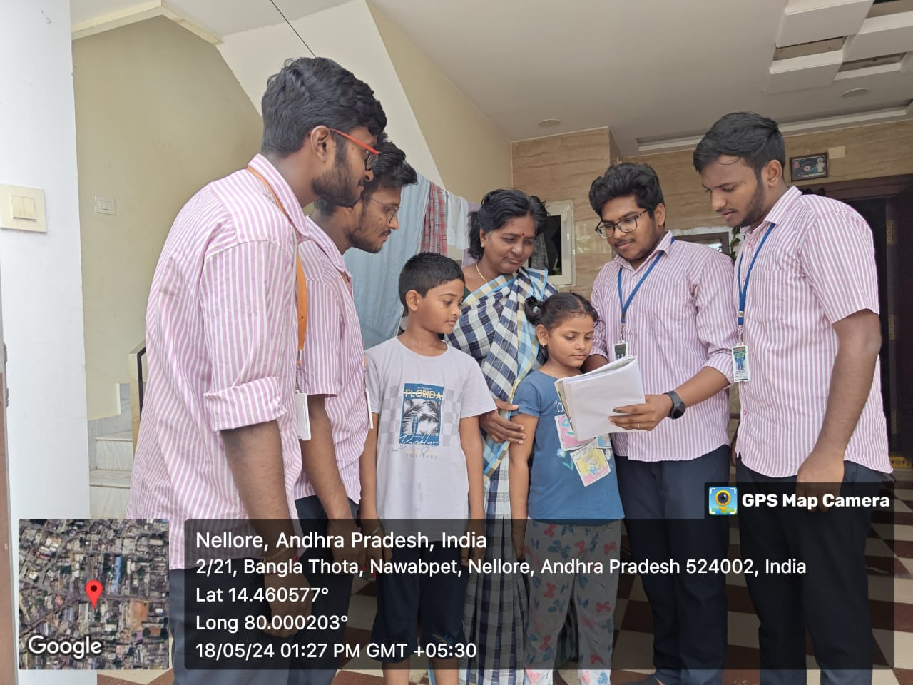
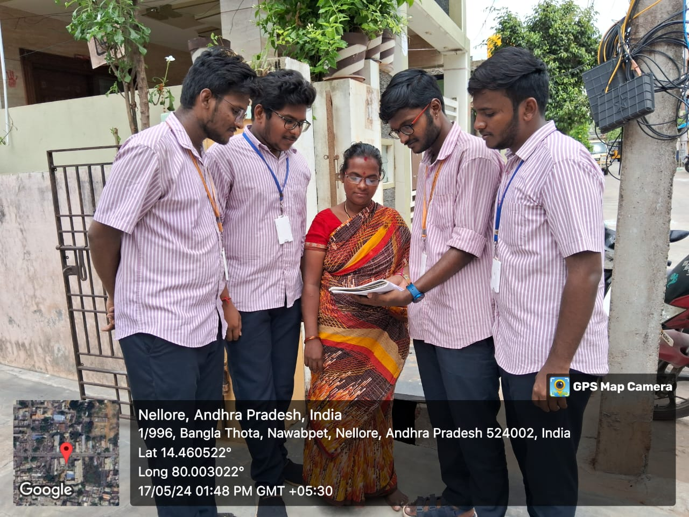
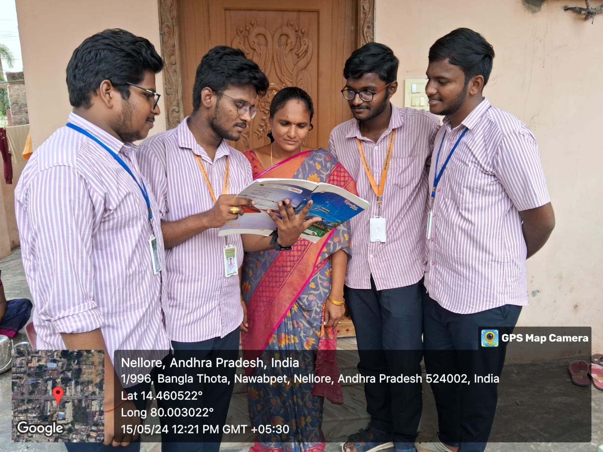
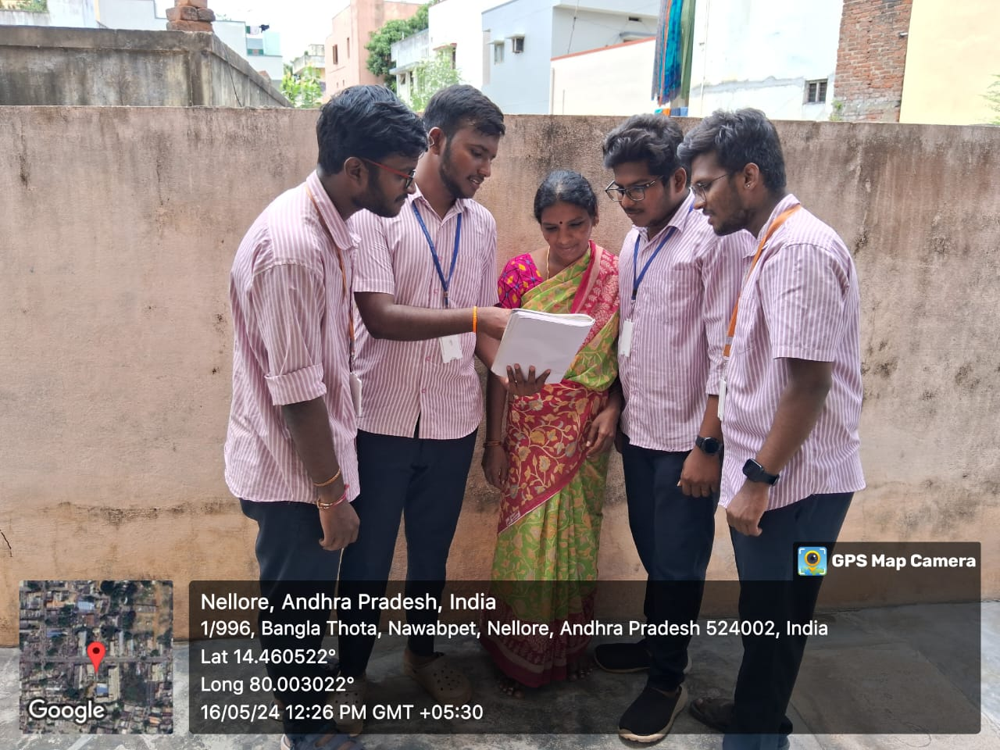
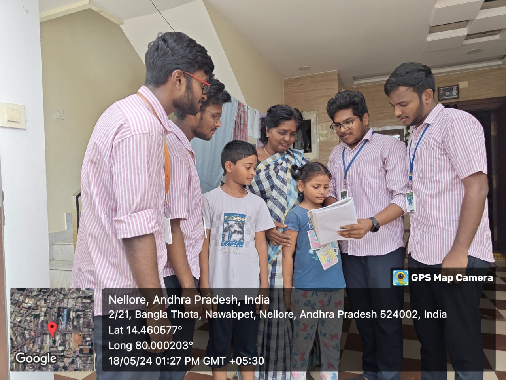
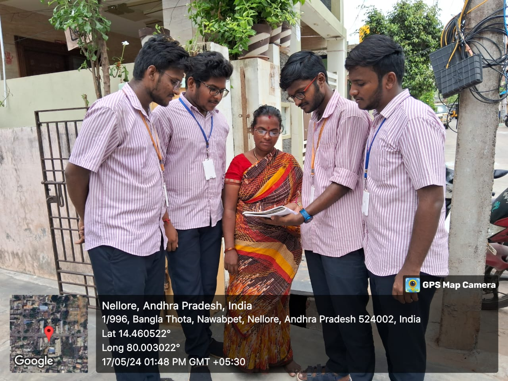
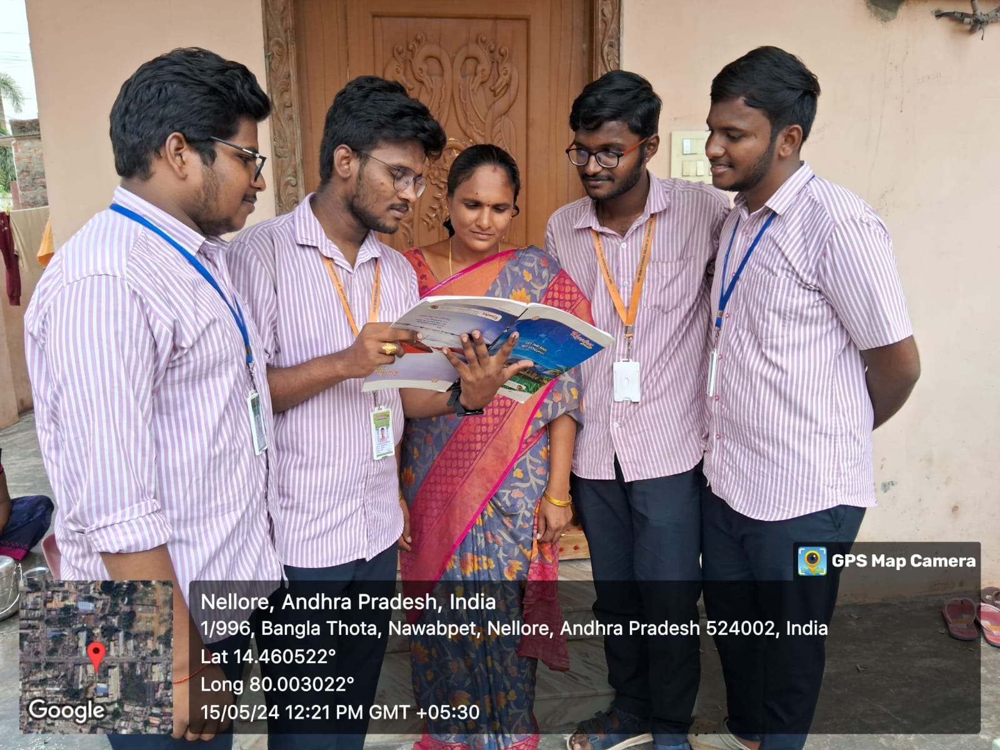
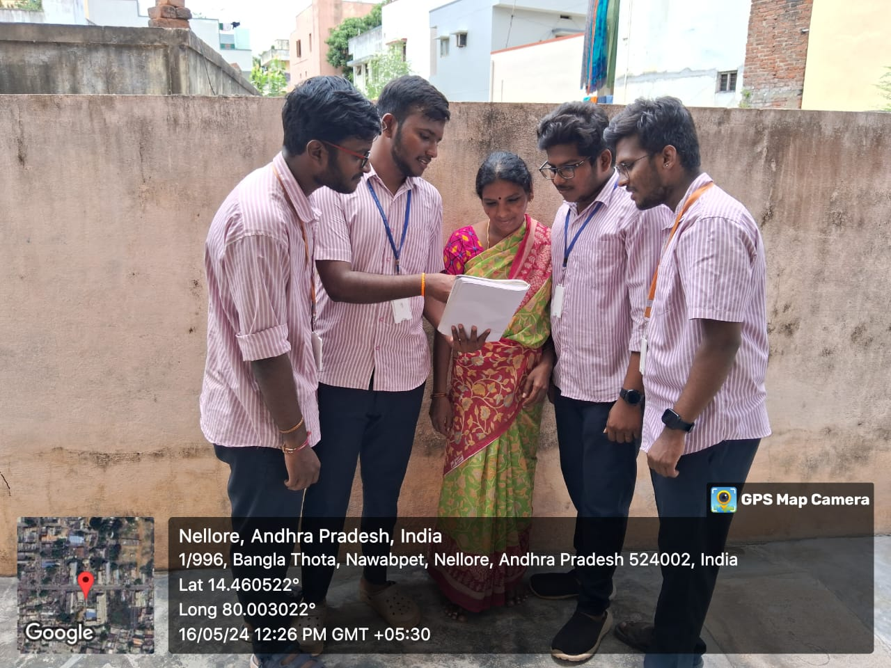

Weekly Report
WEEKLY REPORT DATE: 15-05-2024 to 18-05-2024
Objective of the Activity Done: Survey on the range of awareness of health and hygiene
Detailed Report:
Day 1:
Went to sachivalayam for getting permission for the "Community Service Project". Took permission from MRO.
Day 2:
Continued the survey. Focused on:
- The awareness on the various diseases that are very common in present days.
- Government plans on maintaining good health and doctor support.
- Various measures taken by people to maintain their health.
- Gathered information on people's daily routines.
Day 3:
Found that some people are not taking basic measures such as daily walk, yoga, gym, exercises. Many are unaware of government plans for health.
Day 4:
Continued awareness program:
- Gave suggestions about the present environment and its status.
- Explained good habits in maintaining good health.
- Discussed health and habits.
- Suggested a daily routine including various health habits. Gave basic ideas about personal hygiene.
 






